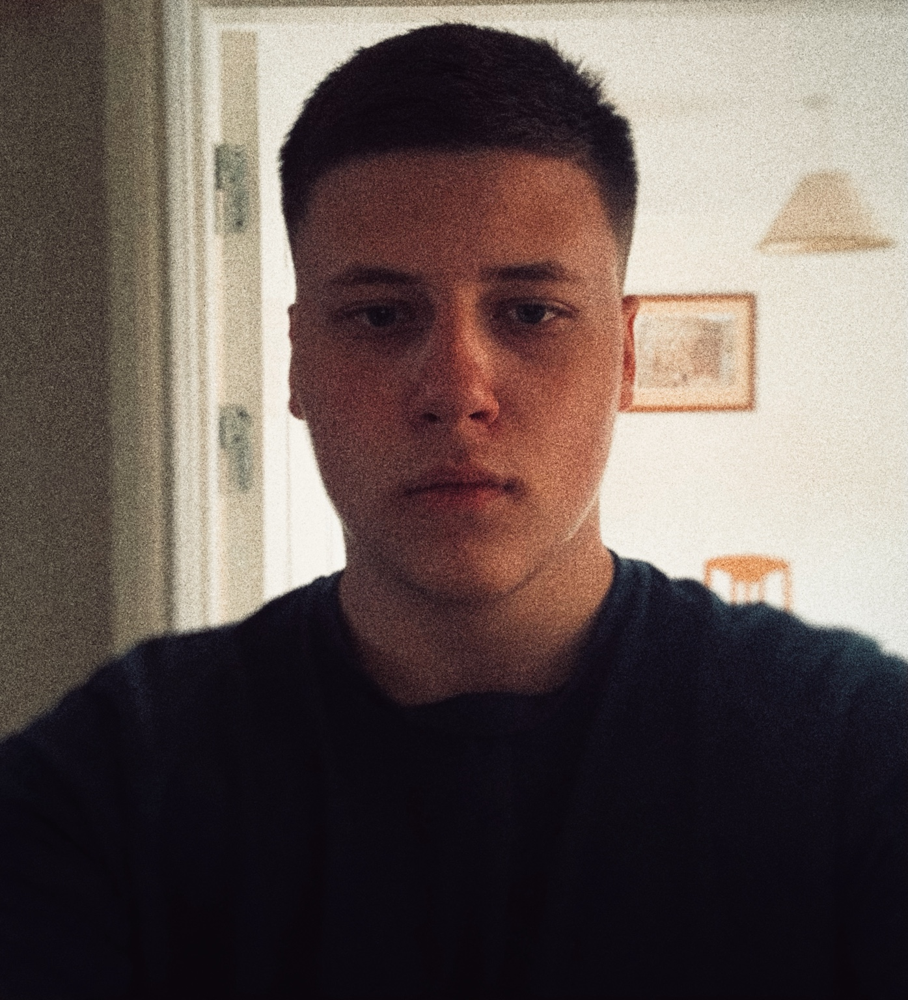

THE PERSON BEHIND THE WEBSITE
About Me

Hello, I'm Dmytro!
I'm someone who likes to stay active, learn new things and take on new challenges. I believe that small steps can lead to big achievements, whether in sport, education or everyday life.
One of the things I enjoy most is running. It helps me clear my mind, feel energetic and work towards personal goals. I also enjoy spending time with friends, listening to music and discovering interesting places.
Some things about me
- I enjoy an active lifestyle.
- I like setting goals and improving myself.
- I'm interested in learning and trying new things.
- I appreciate good music and time with friends.
My goals
I try to focus on progress rather than perfection. These are a few things I want to keep working towards.
- Stay healthyBuild good habits and keep moving.
- Keep learningDevelop useful skills and stay curious.
- Explore moreVisit new places and make great memories.